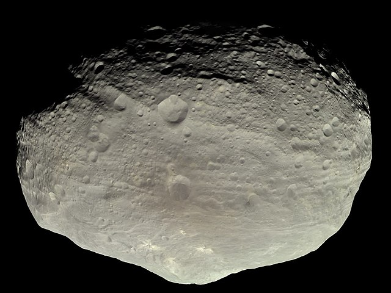

Understanding Our Smaller Neighbors
When people think of our solar system, they often imagine it as our star, the Sun, orbited by the eight planets. This is true, but it isn’t the complete story. These are just the largest of a billion—maybe even a trillion—celestial bodies in our solar system. We are littered with comets and asteroids, and they are scattered everywhere. A large chunk of the asteroids reside in the Kuiper Belt, beyond the orbit of Neptune, and the Asteroid Belt, which lies between Mars and Jupiter. Comets, however, are slightly different because most have highly elliptical orbits.
Asteroids
Asteroids are much larger than comets and meteors, yet they are still far from planet status. Vesta, the second-largest object in the asteroid belt, right behind the dwarf planet Ceres, is almost ten times smaller than Mercury, the smallest planet. Asteroids also come in irregular forms since their small sizes don’t allow for enough gravity to pull all their material into a spherical shape. That said, this isn’t the only strange characteristic they have. As most people likely know, our planet rotates on an axis, which is also true for the other seven planets in our solar system. The issue with asteroids, though, is that many have erratic rotations. These erratic rotations are often caused by the asteroid’s axis not being fixed and usually changing rapidly.

On September 27, 2007, NASA launched a space probe to visit the Asteroid Belt. This was one of many missions there, but it was the first-ever mission to orbit Vesta, bringing back some interesting discoveries—most notably, the finding that it used to, and might still, house water. When the Dawn spacecraft began to orbit Vesta, it detected strange hydrated minerals on the surface of its crust. These hydrated minerals would only be present if water had aided their formation by interacting with them on a molecular level.
Comets
Comets, in contrast to asteroids, aren’t commonly found together in belts around the Sun and are frequently composed of icy materials. The most common comets have orbits such that they speed up as they get closer and closer to the Sun until they are slingshotted around and launched away with inconceivable speed. As the comet begins its journey of leaving the Sun, the gravitational force of the star pulls it back, slowing it down and eventually bringing it back to repeat the process. Nevertheless, there are comets in the asteroid belt, and they are called Main-Belt Comets. Are there comets in the Kuiper Belt? Not exactly. While there are icy bodies that have comet-like behavior, they aren’t referred to as comets; instead, they are called Kuiper Belt Objects or Trans-Neptunian Objects.

Some comets have parabolic or hyperbolic trajectories. Parabolic trajectories are when an object has just enough velocity to leave an orbit, and hyperbolic trajectories are when an object has more than enough escape velocity. This is intriguing because comets can be slingshotted by the Sun or other large objects with so much speed that they will never return. They will leave the solar system forever and be lost in space, drifting in nothingness. The 'Oumuamua comet has a hyperbolic trajectory. It entered our solar system from interstellar space and had such an incredible amount of velocity that it wasn’t slowed down enough by the Sun to begin an orbit around it.